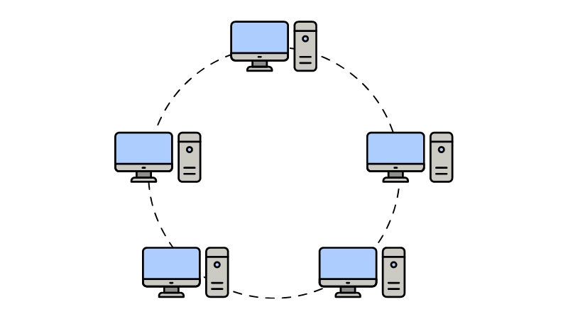
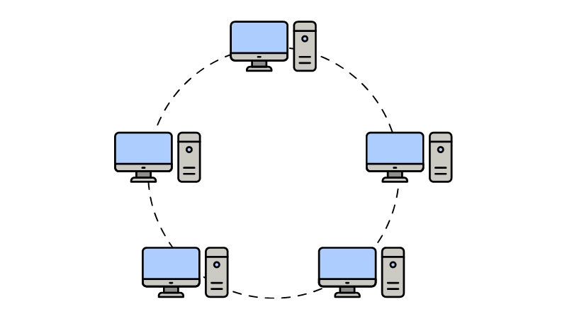
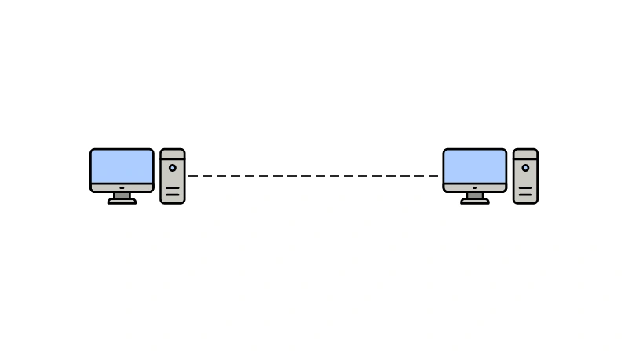
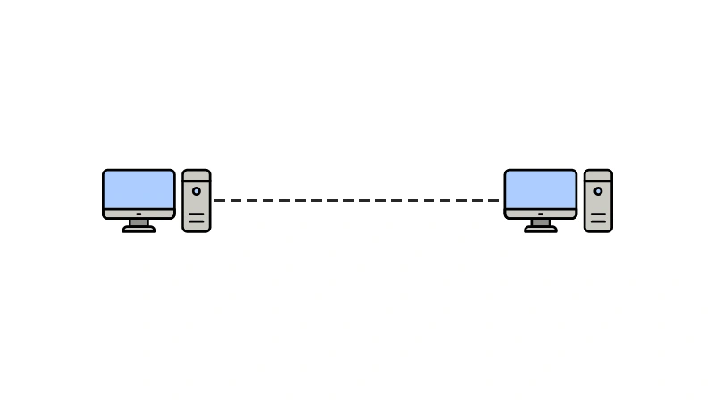

Las redes de computadoras son sistemas que permiten la interconexión de múltiples dispositivos electrónicos (como computadoras, impresoras, servidores y otros) con el fin de compartir información, recursos y servicios. Estas redes están compuestas por hardware (dispositivos físicos) y software (programas y protocolos) que facilitan la transmisión de datos de manera eficiente y segura.
"La Importancia de las Redes de Computadoras"
En el mundo actual, las redes de computadoras han emergido como una de las infraestructuras tecnológicas más cruciales. Han transformado la manera en que las personas, las empresas y los gobiernos interactúan y acceden a la información. Una red de computadoras se define como un conjunto de dispositivos interconectados que pueden compartir recursos y datos, permitiendo la comunicación y la colaboración a nivel local o global. En esencia, las redes de computadoras constituyen el cimiento sobre el cual se construyen muchos de los servicios modernos que usamos a diario, desde navegar por la web hasta realizar transacciones bancarias o participar en videoconferencias.
"Origen y Evolución de las Redes de Computadoras"
El concepto de redes de computadoras surgió a mediados del siglo XX como una solución para compartir recursos entre grandes mainframes. A medida que la tecnología avanzaba, la necesidad de interconectar dispositivos y sistemas se hizo más apremiante. Uno de los hitos más importantes en la historia de las redes fue el desarrollo de ARPANET en 1969, un proyecto del Departamento de Defensa de los Estados Unidos que sirvió de precursor para la creación de Internet. Esta red inicial permitió que varias instituciones académicas compartieran datos y fue pionera en el uso de protocolos que aún hoy son fundamentales para el funcionamiento de las redes modernas.
Con la explosión de la informática personal en los años 80 y 90, las redes de computadoras comenzaron a expandirse rápidamente. Lo que antes era accesible solo para grandes organizaciones y gobiernos, ahora se encontraba al alcance de pequeñas empresas y hogares. Con el tiempo, la tecnología de redes evolucionó para adaptarse a las nuevas demandas de velocidad, capacidad y seguridad. La introducción de la banda ancha, la fibra óptica y las redes inalámbricas hizo que la interconexión global se volviera no solo posible, sino también rápida y accesible.
"Componentes Clave de una Red de Computadoras"
Para entender mejor cómo funcionan las redes de computadoras, es importante desglosar sus componentes básicos. Cada uno de estos desempeña un papel fundamental en el proceso de transmitir datos de un punto a otro.
1.-Dispositivos finales: Los dispositivos finales son aquellos con los que interactuamos directamente, como computadoras, teléfonos inteligentes, impresoras y servidores. Estos dispositivos generan, procesan y consumen la información que viaja a través de la red. Los servidores, por ejemplo, pueden almacenar grandes cantidades de datos, mientras que las computadoras de los usuarios finales se conectan a esos servidores para acceder a la información.
2.-Medio de transmisión: El medio de transmisión es el canal a través del cual los datos viajan entre los dispositivos. Existen dos tipos principales: medios físicos y medios inalámbricos. Los medios físicos incluyen cables de cobre (como el cable Ethernet) y fibra óptica, que permite la transmisión de datos a velocidades extremadamente altas. Por otro lado, las redes inalámbricas, como el Wi-Fi, usan ondas de radio para transmitir datos sin la necesidad de cables, lo que ha revolucionado la movilidad y la accesibilidad de las redes.
3.-Dispositivos de red: Para que los dispositivos finales puedan comunicarse entre sí, es necesario que haya dispositivos intermedios que gestionen el tráfico de datos. Entre los dispositivos más importantes están los enrutadores (routers), que dirigen los paquetes de datos hacia su destino final, y los conmutadores (switches), que permiten la conexión entre múltiples dispositivos en una red local. Además, existen los hubs, que replican y distribuyen la señal a todos los dispositivos conectados, aunque su uso ha disminuido debido a la mayor eficiencia de los switches.
4.-Protocolos de comunicación: Los protocolos son conjuntos de reglas que permiten la comunicación efectiva entre dispositivos. Un ejemplo crucial es el Protocolo de Internet (IP), que asigna direcciones únicas a cada dispositivo en una red, permitiendo que los datos se envíen a los destinos correctos. Otros protocolos importantes incluyen el Protocolo de Control de Transmisión (TCP), que garantiza que los datos lleguen completos y en el orden correcto, y el Protocolo de Transferencia de Archivos (FTP), que facilita el envío de archivos entre dispositivos conectados.
"Tipos de Redes de Computadoras"
Existen diversos tipos de redes de computadoras, clasificadas principalmente por su tamaño, alcance geográfico y propósito. Cada tipo de red cumple funciones específicas y está diseñada para satisfacer diferentes necesidades.
1.-Red de Área Local (LAN): Una LAN es una red que conecta dispositivos en un área geográfica pequeña, como una oficina, un edificio o una escuela. Es el tipo de red más común y permite compartir recursos, como impresoras y archivos, entre un grupo limitado de usuarios. Una LAN suele ser administrada de manera privada y es más rápida que otros tipos de redes debido a la proximidad física de los dispositivos.
2.-Red de Área Amplia (WAN): Una WAN abarca un área geográfica mucho más extensa que una LAN y puede conectar redes ubicadas en diferentes ciudades, países o incluso continentes. El mejor ejemplo de una WAN es Internet, que interconecta millones de redes y dispositivos en todo el mundo. A diferencia de las LAN, las WAN requieren tecnologías más avanzadas y suelen involucrar la infraestructura de múltiples proveedores de servicios de telecomunicaciones.
3.-Red de Área Metropolitana (MAN): Una MAN se sitúa entre una LAN y una WAN en términos de alcance geográfico. Cubre áreas metropolitanas como ciudades enteras y se utiliza para conectar múltiples LAN dentro de una región. Las MAN suelen ser utilizadas por grandes organizaciones o gobiernos locales que necesitan interconectar varias ubicaciones dentro de una ciudad.
4.-Red de Área Personal (PAN): Una PAN es una red pequeña que conecta dispositivos personales dentro de un rango limitado, como una habitación o una oficina pequeña. Los ejemplos más comunes incluyen las conexiones Bluetooth entre un teléfono móvil y unos auriculares, o entre un ordenador portátil y una impresora inalámbrica. Aunque su alcance es limitado, las PAN ofrecen comodidad y flexibilidad para el uso diario de dispositivos personales.
"Elementos de una red de computadoras"
Las redes informáticas contienen los siguientes elementos:
*Servidores: Los servidores son computadoras que procesan el flujo de los datos de la red, atendiendo a todos los demás y centralizando el control de la red. Operan como fiscales, al servicio de las demás (de allí su nombre). Anteriormente se llamaban “maestros”.
*Clientes o estaciones de trabajo: Las computadoras interconectadas y no servidores, que forman parte de la red y permiten el acceso a la misma. Anteriormente se denominaban “esclavas”.
*Medio de transmisión: El cableado o a las ondas electromagnéticas que la red emplea para la transmisión de la información, dependiendo del tipo de red.
*Hardware: Piezas electrónicas que permiten establecer la red, como las tarjetas de red de cada computadora, los módems y enrutadores que sostienen la transmisión, o las antenas repetidoras que extienden la conexión inalámbrica.
*Software: Los programas requeridos para administrar y poner en funcionamiento el hardware, incluido el Sistema Operativo de Redes (NOS, del inglés Network Operating System) o los protocolos comunicativos (como los TCP e IP).
"Topología de red"
1.Topología en Bus: En esta topología, todos los dispositivos están conectados a un único cable central llamado "bus", que actúa como el medio de transmisión. Cada dispositivo se conecta directamente al bus y los datos se transmiten a lo largo del cable. Solo un dispositivo puede transmitir datos a la vez para evitar colisiones.
2.Topología en Estrella: En la topología en estrella, todos los dispositivos están conectados a un nodo central, que generalmente es un switch o un hub. Cada dispositivo tiene una conexión individual con el nodo central, lo que facilita el control y la administración de la red.
3.Topología en Anillo: En esta topología, los dispositivos están conectados en un bucle cerrado, formando un anillo. Cada dispositivo tiene dos conexiones, una con el dispositivo a su izquierda y otra con el de la derecha. Los datos viajan en una dirección a lo largo del anillo hasta llegar al destino.
4.Topología en Malla: En una topología en malla, cada dispositivo está conectado a todos los demás dispositivos en la red, creando múltiples rutas para que los datos viajen. Esto asegura redundancia y tolerancia a fallos, ya que si una conexión falla, los datos pueden viajar por otra ruta.
5.Topología en Árbol(Jerárquica): La topología en árbol es una combinación de varias topologías en estrella. Los nodos se organizan en una estructura jerárquica, con un nodo raíz en la parte superior y otros nodos que cuelgan de él, formando ramas. Es ideal para grandes redes con muchos nodos.
6.Topología Híbrida: Una topología híbrida combina dos o más topologías de red diferentes para aprovechar las ventajas de cada una. Por ejemplo, puede combinar una topología en estrella y una en bus para diferentes partes de la red.
7.Topología Punto a Punto(P2P): En una topología punto a punto, solo dos dispositivos están conectados directamente entre sí. Se utiliza principalmente para conexiones simples entre dos nodos, como un enlace entre dos computadoras o entre una impresora y una computadora.
8.Topología Híbrida Logística: Este tipo de topología no tiene una estructura física claramente definida, pero utiliza combinaciones lógicas para gestionar la distribución del tráfico en redes muy grandes. Se usa a menudo en sistemas complejos como Internet, donde los datos pueden viajar de muchas formas.
"Protocolos de red"
La comunicación en las redes de computadoras se logra gracias a una serie de estándares de comunicación o “protocolos”, que traducen a un mismo código las solicitudes y respuestas de los equipos.
El más común de ellos es el TCP/IP, pero existen muchos que varían en su complejidad y en la cantidad de capas de información que manejan al mismo tiempo, permitiendo una comunicación más segura, confiable e inaccesible por terceros.
"Modelo OSI (Open Systems Interconnection)"
El modelo OSI (Open Systems Interconnection) es un modelo conceptual que estandariza las funciones de un sistema de comunicaciones en siete capas, permitiendo que diferentes sistemas y tecnologías de redes puedan comunicarse entre sí de manera eficiente. Desarrollado por la Organización Internacional de Normalización (ISO) en 1984, el modelo OSI proporciona un marco de referencia para la interoperabilidad de sistemas y redes de computadoras.
Cada capa del modelo OSI tiene funciones específicas y está diseñada para realizar tareas concretas, pero todas trabajan juntas para garantizar que los datos puedan transferirse desde un dispositivo origen hasta un dispositivo destino a través de una red.
1.-Capa Física (Physical Layer):
La capa física es la más baja del modelo OSI y está encargada de la transmisión física de datos. Define los medios de transmisión, las características del hardware y las formas en que los bits (0s y 1s) se transmiten por el canal de comunicación. Incluye especificaciones eléctricas, ópticas, de frecuencia de radio y mecánicas.
Funciones principales:
*Definir las características físicas del hardware, como los conectores, cables y voltajes.
*Transmitir y recibir señales eléctricas o impulsos de luz.
*Controlar las interfaces de hardware y los medios de transmisión.
*Determinar la tasa de bits o velocidad de transmisión.
Dispositivos asociados:
Cables (UTP, fibra óptica, coaxial), repetidores, hubs y medios físicos en general.
2.-Capa de Enlace de Datos (Data Link Layer):
Esta capa es responsable de establecer una conexión confiable entre dos nodos directamente conectados. La capa de enlace de datos organiza los bits en tramas (frames) y se asegura de que las tramas sean transmitidas correctamente a través del medio físico.
Funciones principales:
*Detección y corrección de errores en la transmisión de datos.
*Control de acceso al medio (determina cómo los dispositivos comparten el canal de comunicación).
*Dividir los datos en tramas para su transmisión.
*Proveer mecanismos para la sincronización de tramas.
*Subcapas:
LLC (Logical Link Control): Controla el flujo de datos y maneja los errores.
MAC (Media Access Control): Se encarga de la direccionamiento físico a través de las direcciones MAC.
Dispositivos asociados:
Switches, bridges y tarjetas de red (NIC).
3.-Capa de Red (Network Layer):
La capa de red gestiona el direccionamiento lógico y determina la mejor ruta para que los datos viajen entre los nodos de origen y destino en redes interconectadas. Esta capa permite que los datos viajen a través de redes múltiples, como una LAN y una WAN.
Funciones principales: Enrutamiento: Determinar la mejor ruta para que los paquetes lleguen a su destino.
Direccionamiento lógico: Utiliza direcciones IP para identificar el origen y el destino de los paquetes de datos.
Fragmentación y reensamblaje de paquetes.
Protocolos asociados:
IP (Protocolo de Internet), ICMP (Protocolo de Mensajes de Control de Internet), IGMP (Protocolo de Gestión de Grupo de Internet).
Dispositivos asociados:
Enrutadores (routers).
4.-Capa de Transporte (Transport Layer):
La capa de transporte se encarga de la transferencia fiable de datos entre dos dispositivos en la red. Proporciona servicios como el control de flujo, la segmentación y la gestión de errores, asegurando que los datos lleguen completos y en el orden correcto.
Funciones principales: Segmentación: Dividir los datos en segmentos y asegurar su transmisión en el orden correcto.
Control de flujo: Gestionar la cantidad de datos que se envían para evitar la congestión.
Corrección de errores: Verificar que los segmentos lleguen sin errores y reenviar los que se pierdan.
Multiplexación: Permitir que múltiples aplicaciones utilicen una conexión de red simultáneamente.
Protocolos asociados:
TCP (Transmission Control Protocol): Proporciona una transmisión confiable y orientada a la conexión.
UDP (User Datagram Protocol): Ofrece una transmisión rápida pero no confiable, sin garantía de entrega o secuenciación.
5.-Capa de Sesión (Session Layer):
La capa de sesión gestiona el establecimiento, mantenimiento y terminación de sesiones entre dos aplicaciones que se comunican a través de la red. Una sesión es el diálogo que ocurre entre dos dispositivos que intercambian datos.
Funciones principales:
*Establecer, gestionar y finalizar conexiones entre aplicaciones.
*Sincronización de diálogos entre aplicaciones.
*Control de las sesiones de comunicación para mantenerlas abiertas o cerrarlas según sea necesario.
Protocolos asociados:
RPC (Remote Procedure Call), NetBIOS, PAP (Protocolo de Autenticación de Puerto).
6.-Capa de Presentación (Presentation Layer):
La capa de presentación es responsable de traducir, cifrar y comprimir los datos para que puedan ser interpretados correctamente por la aplicación que los recibe. Asegura que los datos enviados por una aplicación en un formato específico sean comprensibles para otra aplicación que puede tener un formato diferente.
Funciones principales: Traducción: Convertir los datos del formato utilizado por la aplicación a un formato estándar que pueda ser interpretado por la capa inferior.
Cifrado y descifrado: Garantizar la seguridad de los datos mediante la codificación antes de enviarlos y la decodificación cuando se reciben.
Compresión y descompresión: Reducir el tamaño de los datos para acelerar su transmisión y restaurarlos al tamaño original al recibirlos.
Formatos y estándares asociados:
JPEG, GIF, MPEG, ASCII, EBCDIC, cifrado SSL/TLS.
7.-Capa de Aplicación (Application Layer):
La capa de aplicación es la capa más alta del modelo OSI y es la que interactúa directamente con las aplicaciones y los usuarios. Proporciona los servicios necesarios para que las aplicaciones puedan comunicarse a través de la red.
Funciones principales:
*Proporcionar interfaces para que las aplicaciones interactúen con la red.
*Facilitar servicios como correo electrónico, transferencia de archivos, acceso a bases de datos y navegación web.
*Gestionar las solicitudes de los usuarios y los procesos de comunicación entre dispositivos.
Protocolos asociados:
HTTP (Hypertext Transfer Protocol), FTP (File Transfer Protocol), SMTP (Simple Mail Transfer Protocol), DNS (Domain Name System), Telnet.
"¿Por qué son importantes las redes de computadora?"
En el mundo computarizado del presente, las redes de computadoras se encuentran en casi todos los ámbitos de la vida, especialmente en los que atañen a la burocracia o la administración.
También involucran a la propia Internet, a la que accedemos desde computadoras, teléfonos celulares y otros dispositivos.
La economía global, el intercambio cultural e incluso la socialización en línea existen gracias a las redes.
"Conclusión"
Las redes de computadoras han revolucionado la manera en que el mundo interactúa y opera. Desde las conexiones locales dentro de una oficina hasta la vasta red global que es Internet, estas redes facilitan el intercambio de información, la colaboración y la innovación en todos los sectores. Aunque los desafíos como la seguridad continúan siendo importantes, los beneficios de las redes de computadoras superan con creces los riesgos, posicionándolas como una infraestructura esencial para el progreso de la sociedad contemporánea. A medida que la tecnología continúa avanzando, las redes de computadoras seguirán evolucionando, moldeando el futuro de la conectividad global y digital.
video sobre Redes de computadoras:
Algunos vinculos de informacion sobre Redes de computadoras:


 


 
